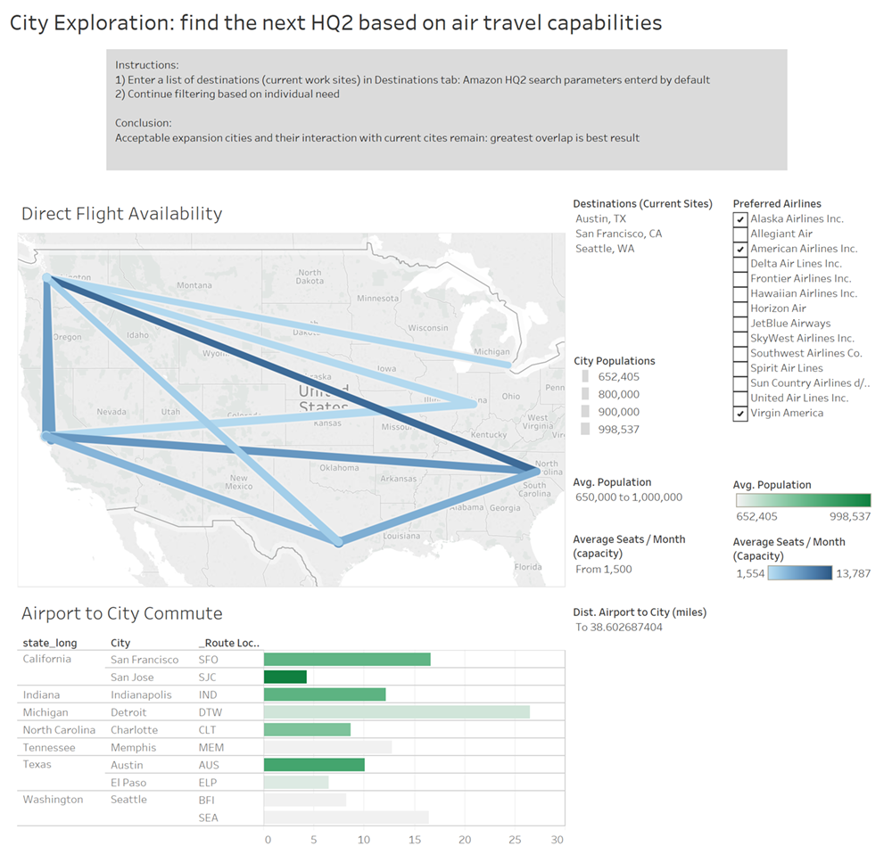

Air Travel Version 8
Incorporated combined user testing feedback: priority to filters and sortable to support task, then use the map as supporting info.
Color scheme changed to mirror 'stock' dashboards to assist with non-technical interpretation of good / bad matches.
Travel score developed and ranked based on weights of filters, documented on the dashboard.
Click down for previous verions of this viz.
Air Travel Version 6
Incorporated group comments in preparation for user testing. Airports grouped by city and state.
Many fixes were behind the scenes such as matching cities to the correct state (Portland, OR vs. Portland, ME).

Click down for previous verions of this viz.
Air Travel Version 5
Incorporated group comments re: user testing to allow for multiple city selection.
Added 'seats' attribute filter to reveal capacity as flight flexibility proxy.
Click down for previous verions of this viz.
Air Travel Version 4
Incorporated Balsamic principles to mirror intended workflow for a single city.
Concentration on building route map within Tableau was central focus of this effort which requires unique data manipulation.
Added a derived variable: airport-to-city center commute time. Variable created based on arc distance of geo-tags.
Click down for previous verions of this viz.
Air Travel Version 3
This was a strong start with showing city air traffic in D3, but realized quickly we would be spending more time debugging javascript than driving interactive insights into US city air travel.
Click down for previous verions of this viz.
Air Travel Version 1
This was the baseline model. This dashboard was built for pure exploration of data. Very hard to draw insights without study and understanding of the dataset.
City Quality of Life
Specify quality of life filters to compare candidate cities.
Colors reflect percentile ranking from worst (red) to best (green) among all US cities with population >150K.
Click down for previous verions of this viz.
City Quality of Life Final Version Comments
We changed to a linear color scheme (intead of a divergent one).
Click down for previous verions of this viz.
Nested slides are useful for adding additional detail underneath a high level horizontal slide.
City Quality of Life Version 4
We changed the layout to make it more readable, and we grouped the filters and labeled them clearly.
Click down for previous verions of this viz.
Nested slides are useful for adding additional detail underneath a high level horizontal slide.
City Quality of Life Version 3
Although the Flourish implementation provided a beautiful view of the data, it lacked the important functionality of being able to filter the cities based on the user's QOL criteria.
For this version, we moved back to Tableau.
We split out the component factors in the QOL ranking from Nerd Wallet to allow the user more control.
Click down for previous verions of this viz.
Nested slides are useful for adding additional detail underneath a high level horizontal slide.
City Quality of Life Version 2
The initial Tableau view was not as beautiful as the Flourish implementation, so we went with this for user testing.
Click down for previous verions of this viz.
Nested slides are useful for adding additional detail underneath a high level horizontal slide.
City Quality of Life Version 1
This was an initial Tableau implementation for City QOL. We user the QOL index from Nerd Wallet.